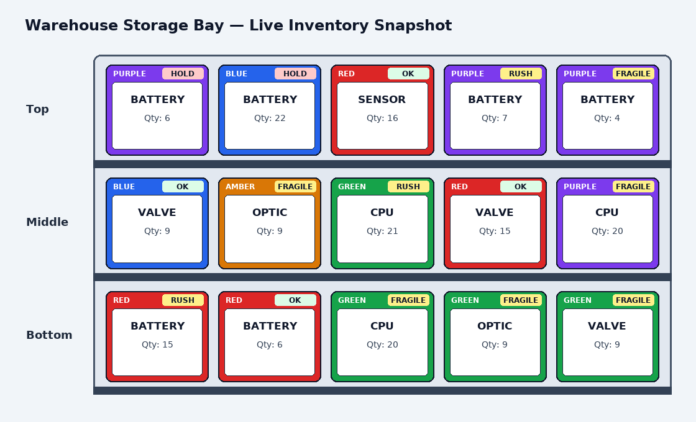
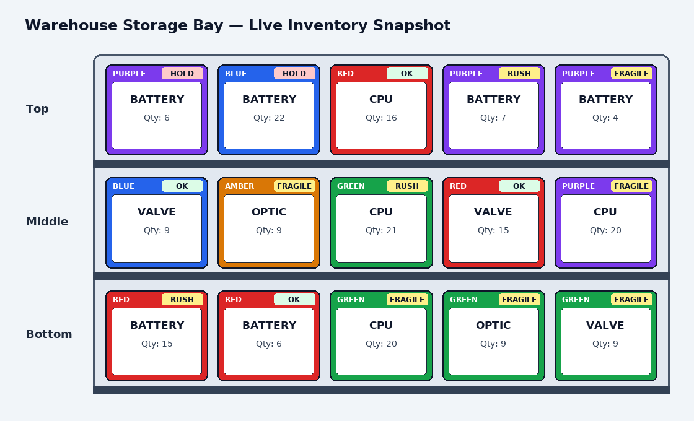
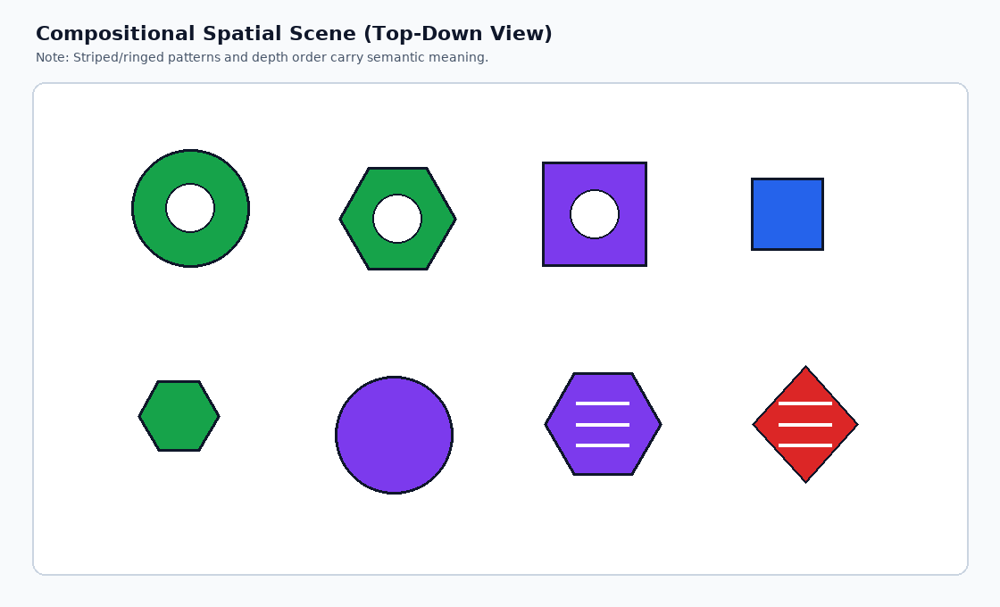
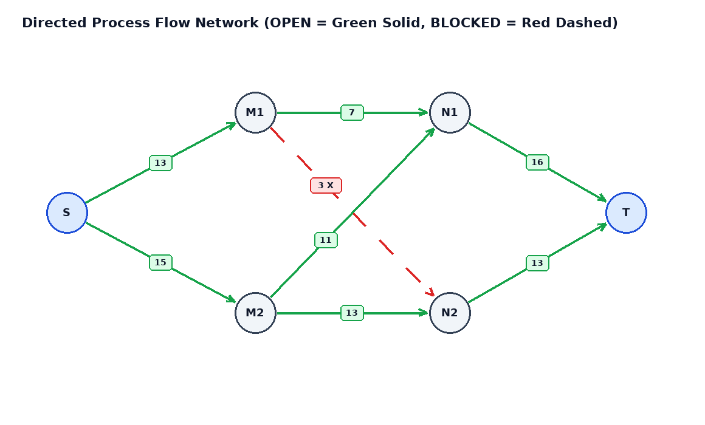
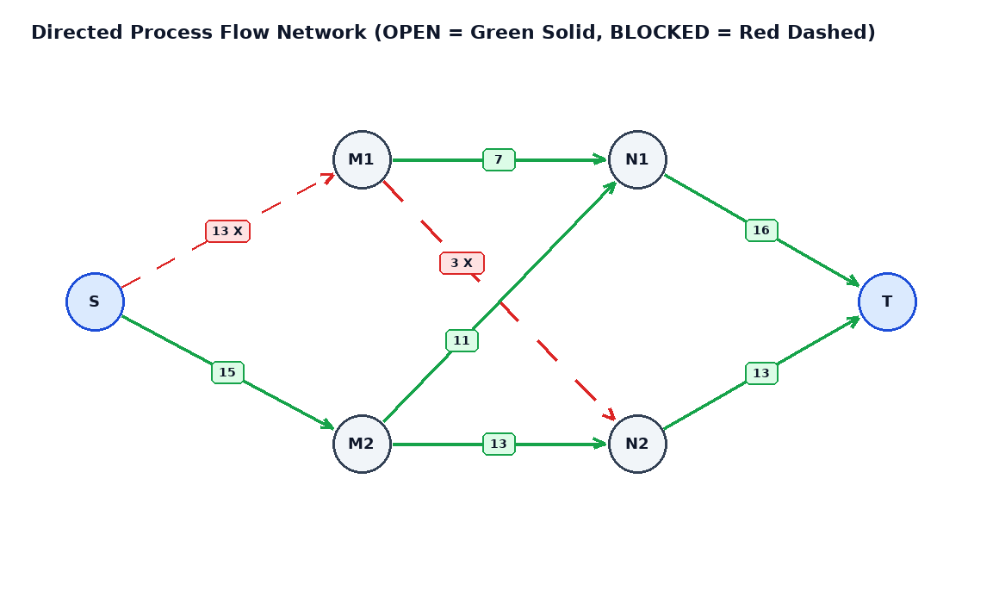
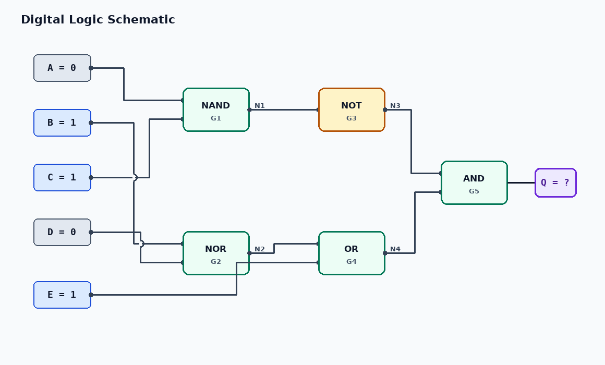
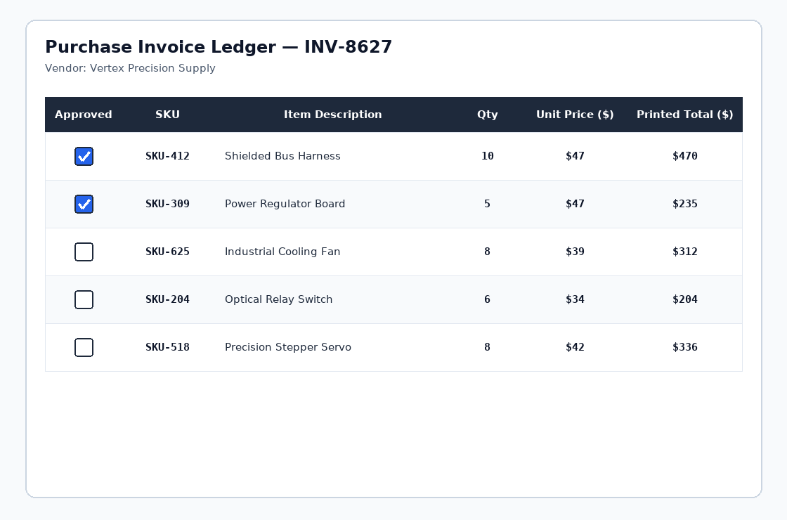
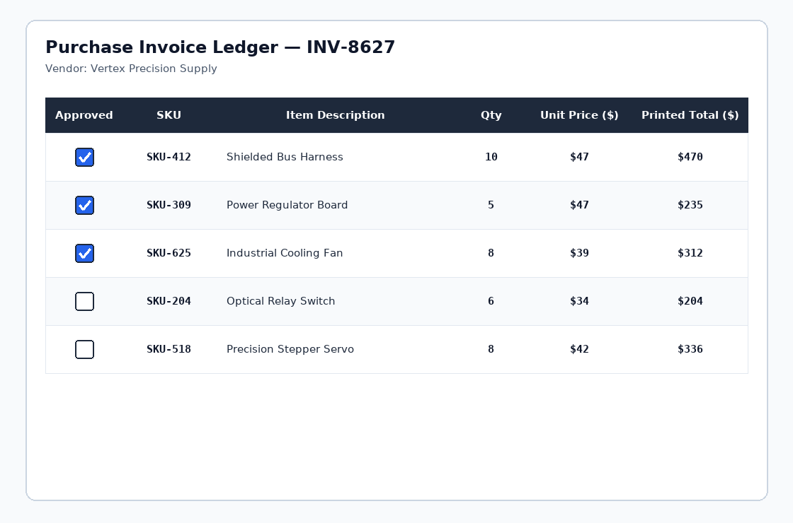
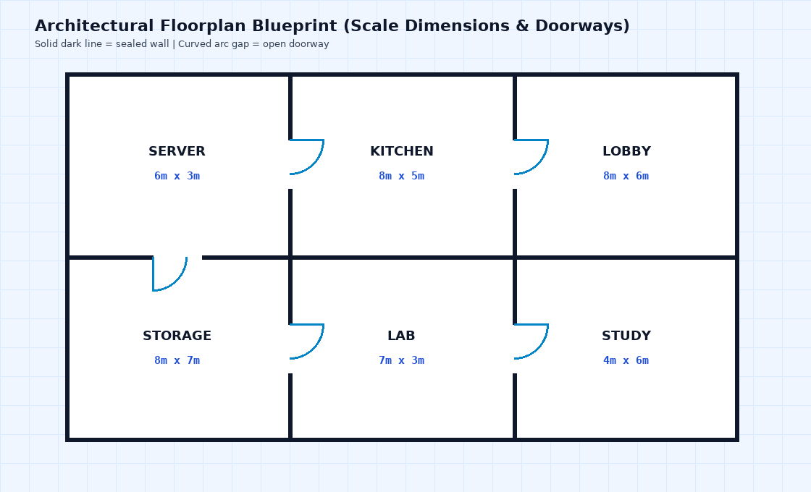

Visual Task Factory — Benchmark & Failure Report
Valid Tasks: 30 | Rejected Candidates: 0
| Model | Strict Acc | Attempted Acc | 95% Wilson CI | CF Consistency | Hallucination | blueprints_gauges | charts | logic_circuits | spatial_inventory | structured_docs | API Errors |
|---|
blind_text_prior | 10.0% | 10.0% (3/30) | [3.5%, 25.6%] | 0.0% | 100.0% | 0.0% | 16.7% | 33.3% | 0.0% | 0.0% | 0 |
pixel_cv_heuristic | 6.7% | 6.7% (2/30) | [1.8%, 21.3%] | 0.0% | 100.0% | 0.0% | 16.7% | 16.7% | 0.0% | 0.0% | 0 |
blind_llm_mistral_latest | 0.0% | 0.0% (0/30) | [0.0%, 11.3%] | 0.0% | 100.0% | 0.0% | 0.0% | 0.0% | 0.0% | 0.0% | 0 |
qwen2.5vl:3b | 56.7% | 56.7% (17/30) | [39.2%, 72.6%] | 46.7% | 0.0% | 33.3% | 100.0% | 33.3% | 50.0% | 66.7% | 0 |
gemini-3.5-flash-lite | 83.3% | 83.3% (25/30) | [66.4%, 92.7%] | 73.3% | 0.0% | 66.7% | 100.0% | 50.0% | 100.0% | 100.0% | 0 |
gemini-3.5-flash | 70.0% | 95.5% (21/22) | [78.2%, 99.2%] | 66.7% | 0.0% | 0.0% | 100.0% | 83.3% | 100.0% | 66.7% | 8 |
oracle_spec_verifier | 100.0% | 100.0% (30/30) | [88.6%, 100.0%] | 100.0% | 0.0% | 100.0% | 100.0% | 100.0% | 100.0% | 100.0% | 0 |
Failure Taxonomy
| Model | abstention_hallucination | api_quota_error | blueprint_gauge_spatial | circuit_dag_reasoning | correct | numeric_mismatch | parse_failure | wrong_entity |
|---|
blind_text_prior | 1 | 0 | 6 | 4 | 3 | 7 | 0 | 9 |
pixel_cv_heuristic | 1 | 0 | 6 | 5 | 2 | 7 | 0 | 9 |
blind_llm_mistral_latest | 1 | 0 | 6 | 6 | 0 | 0 | 8 | 9 |
qwen2.5vl:3b | 0 | 0 | 4 | 4 | 17 | 2 | 0 | 3 |
gemini-3.5-flash-lite | 0 | 0 | 2 | 3 | 25 | 0 | 0 | 0 |
gemini-3.5-flash | 0 | 8 | 0 | 1 | 21 | 0 | 0 | 0 |
oracle_spec_verifier | 0 | 0 | 0 | 0 | 30 | 0 | 0 | 0 |
Spotlight: Real VLM Reasoning Failure Cases
qwen2.5vl:3b failed on spatial_inventory_medium_s170 (spatial_inventory / spatial_neighbor_lookup)
Question: On the warehouse rack, what item type is stored in the crate immediately to the right of the unique Blue HOLD crate?
Expected: SENSOR | Predicted: BATTERY

{"answer": "BATTERY", "reason": "The crate immediately to the right of the Blue HOLD crate is labeled 'BATTERY'."}qwen2.5vl:3b failed on spatial_inventory_medium_s170_cf (spatial_inventory / spatial_neighbor_lookup)
Question: On the warehouse rack, what item type is stored in the crate immediately to the right of the unique Blue HOLD crate?
Expected: CPU | Predicted: BATTERY

{"answer": "BATTERY", "reason": "The crate immediately to the right of the Blue HOLD crate is purple and labeled 'BATTERY'."}qwen2.5vl:3b failed on spatial_inventory_hard_s201 (spatial_inventory / compositional_spatial_relation)
Question: What color is the object immediately to the right of the striped purple hexagon?
Expected: Red | Predicted: blue

```json
{
"answer": "blue",
"reason": "The object immediately to the right of the striped purple hexagon is a blue square."
}
```qwen2.5vl:3b failed on logic_circuits_medium_s263 (logic_circuits / constrained_shortest_path)
Question: In this directed routing diagram, green solid arrows are OPEN and red dashed arrows are BLOCKED. What is the minimum total cost to travel from node S to node T using ONLY OPEN arrows?
Expected: 36 | Predicted: 29

```json
{
"answer": "29",
"reason": "The minimum total cost to travel from node S to node T using only open arrows is 29, which is the sum of the weights of the open edges: 13 + 11 + 13 = 29."
}
```qwen2.5vl:3b failed on logic_circuits_medium_s263_cf (logic_circuits / constrained_shortest_path)
Question: In this directed routing diagram, green solid arrows are OPEN and red dashed arrows are BLOCKED. What is the minimum total cost to travel from node S to node T using ONLY OPEN arrows?
Expected: 41 | Predicted: 28

```json
{
"answer": "28",
"reason": "The minimum total cost to travel from node S to node T using only open arrows is 28, which is the sum of the weights of the open edges: 15 + 11 + 13 = 29, but since the edge from M2 to N2 is blocked, we subtract the blocked weight of 3, resulting in 29 - 3 = 28."
}
```qwen2.5vl:3b failed on logic_circuits_hard_s294 (logic_circuits / circuit_fault_sensitivity)
Question: In this logic schematic (curved bridge arcs show non-connecting wire crossings), which SINGLE input pin (A, B, C, D, or E), if flipped alone (0->1 or 1->0) while all other inputs remain unchanged, changes the final output Q?
Expected: A | Predicted: B

```json
{
"answer": "B",
"reason": "Flipping B changes the output Q."
}
```qwen2.5vl:3b failed on logic_circuits_hard_s294_cf (logic_circuits / circuit_fault_sensitivity)
Question: In this logic schematic (curved bridge arcs show non-connecting wire crossings), which SINGLE input pin (A, B, C, D, or E), if flipped alone (0->1 or 1->0) while all other inputs remain unchanged, changes the final output Q?
Expected: E | Predicted: D

```json
{
"answer": "D",
"reason": "Flipping D alone changes the final output Q."
}
```qwen2.5vl:3b failed on structured_docs_medium_s356 (structured_docs / checkbox_filtered_sum)
Question: In this invoice ledger, what is the combined Total ($) of all line items whose Approved checkbox is checked?
Expected: 705 | Predicted: 716

```json
{
"answer": "716",
"reason": "The total is calculated by adding the printed totals of the approved items: $470 + $235 + $312 + $204 + $336 = $716."
}
```qwen2.5vl:3b failed on structured_docs_medium_s356_cf (structured_docs / checkbox_filtered_sum)
Question: In this invoice ledger, what is the combined Total ($) of all line items whose Approved checkbox is checked?
Expected: 1017 | Predicted: 1092

```json
{
"answer": "1092",
"reason": "The total is calculated by summing the printed totals of the approved items: $470 + $235 + $312 + $336 = $1092."
}
```qwen2.5vl:3b failed on blueprints_gauges_easy_s418 (blueprints_gauges / blueprint_area_sum)
Question: On this architectural floorplan blueprint, what is the combined floor area (in sq m) of Study and Server?
Expected: 47 | Predicted: 32
```json
{
"answer": "32",
"reason": "Study area is 3m x 4m = 12 sq m, Server area is 5m x 7m = 35 sq m. Combined area is 12 + 35 = 47 sq m."
}
```qwen2.5vl:3b failed on blueprints_gauges_medium_s449 (blueprints_gauges / blueprint_door_hops)
Question: On this floorplan blueprint, curved quarter-circle arcs indicate OPEN doorways while solid lines are walls. Starting inside Lobby, what is the minimum number of open doorways you must cross to reach Study?
Expected: 5 | Predicted: 2

```json
{
"answer": "2",
"reason": "The floor plan shows two open doorways between the Lobby and the Study, as indicated by the curved arcs."
}
```qwen2.5vl:3b failed on blueprints_gauges_medium_s449_cf (blueprints_gauges / blueprint_door_hops)
Question: On this floorplan blueprint, curved quarter-circle arcs indicate OPEN doorways while solid lines are walls. Starting inside Lobby, what is the minimum number of open doorways you must cross to reach Study?
Expected: 3 | Predicted: 2

```json
{
"answer": "2",
"reason": "The floor plan shows two open doorways between the Lobby and Study, as indicated by the curved arcs."
}
```